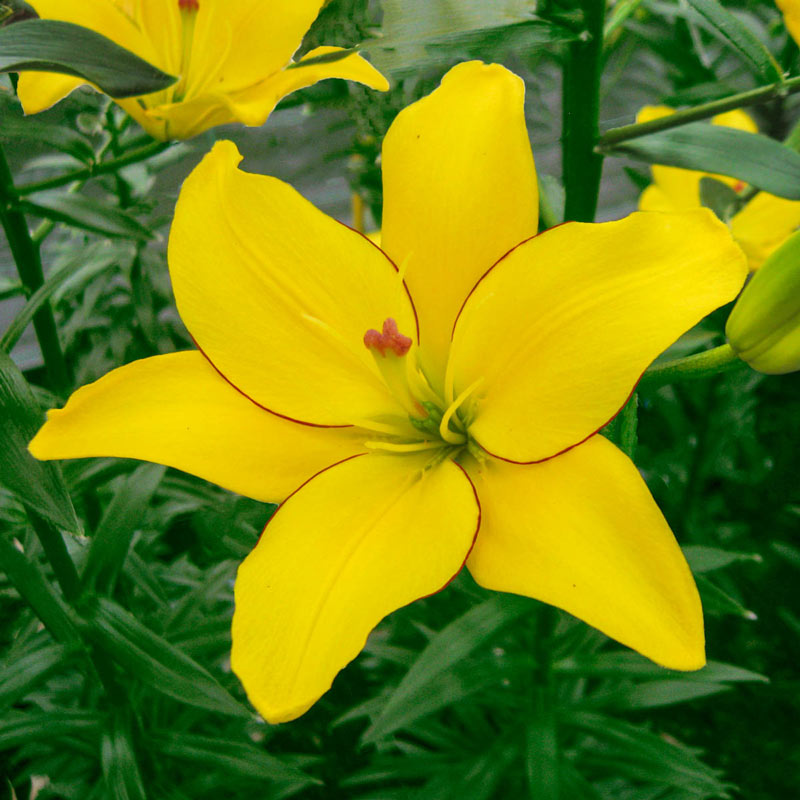
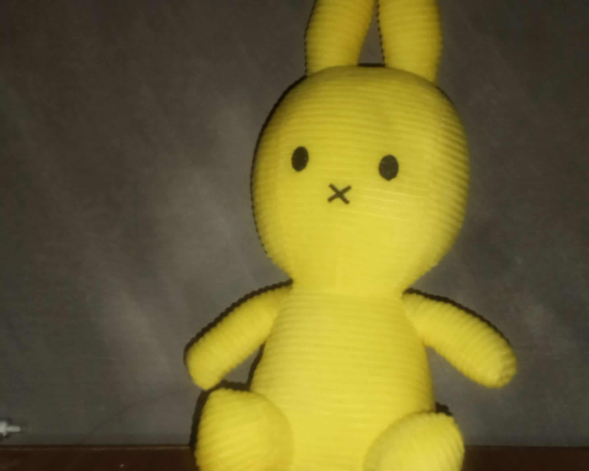
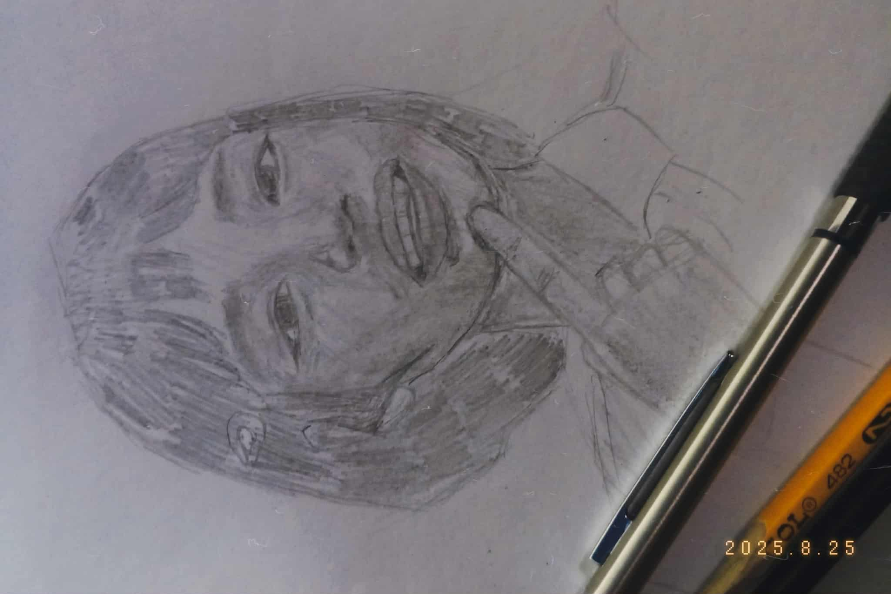
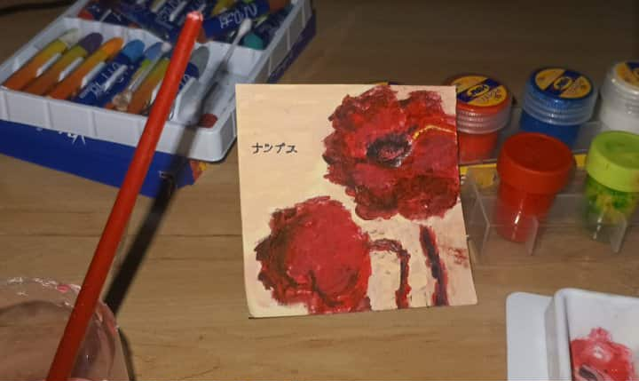

some things i guesz..:|
random things (idk what to put na):|

yellow lily bc its both ur fav. plus its nanami and pompompurin.

my gift to u

portrait

a painting i did before u shareposted it on fb.
i knw dim.
ur fatass boi
backk again to boxx
2 (i dont prefer reading this tbh)